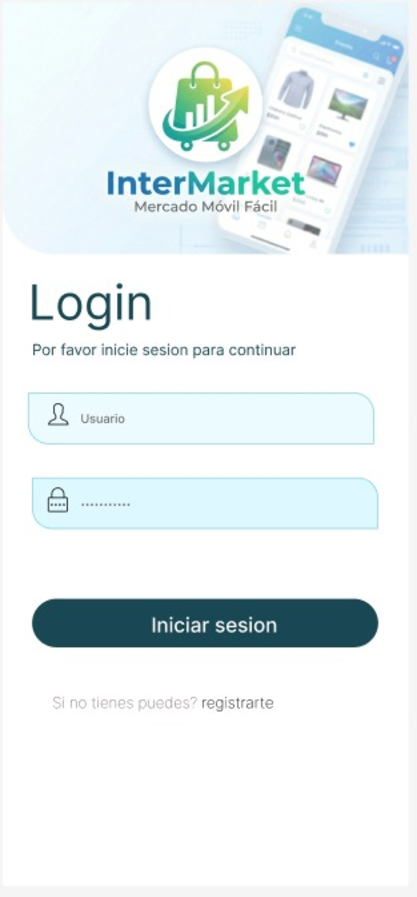

Hagan scroll. ¿Notan cómo los elementos aparecen suavemente (fade-in)? ¿Y cómo los botones reaccionan al ratón? La animación no es para "adornar", es para guiar el ojo y reducir la fricción. No abusen de ellas o bajarán sus conversiones.
Descubre productos únicos, conecta con vendedores confiables y realiza tus compras de forma rápida y segura. En InterMarket, todo lo que necesitas está al alcance de un clic.
👉 Añadan un reductor de riesgo aquí.

Usen esta sección para empatizar con sus futuros usuarios. Hagan que al leer esto digan: "Sí, exactamente eso me pasa a mí".
Describan el primer síntoma del problema. Háganlo visceral y real.
¿Cuál es la peor consecuencia de no resolver ese primer dolor?
Rematen con la carga emocional que esto le genera a su usuario.
Regla de oro chicos: No nos listen características técnicas aburridas. Tradúzcanlas a BENEFICIOS reales para la vida de las personas.
Expliquen cómo la vida de sus usuarios mejora después de usar esta función clave. Enfóquense en el alivio o la alegría que sentirán.
Pantallazo interactivo de esta función específica
Expliquen a sus visitantes que el registro toma solo unos segundos.
Mencionen la primera acción de valor que deben hacer en la app.
Reafirmen la gran promesa de valor que hicieron arriba en el Hero.
Como estamos con un MVP, usen testimonios de sus primeros beta testers o un manifiesto personal.
"El formato ideal que deben buscar: El problema que tenían + Cómo su app lo solucionó + El resultado medible que lograron."
Nombre Ficticio
Usuario Beta
Un buen marketing también sabe decir "no".
Describan con detalle a su Buyer Persona (ej. Estudiantes que trabajan).
Aumenten su credibilidad siendo honestos sobre a quién NO le sirve su app.
Por ser un MVP, la exclusividad les juega a favor. Pueden decir algo como: "Acceso solo a los primeros 500 usuarios. Quedan 42 lugares".
💡 Equipo: En el marketing puro, decir "proyecto escolar" baja las conversiones. El truco aquí es enmarcarlo como "El Equipo Fundador". Esto da un rostro humano a la app, genera confianza y, de paso, les sirve como un portafolio profesional brutal para reclutadores.
Rol (marketing)
Apasionada por crear estrategias de marketing innovadoras que impulsen el crecimiento de productos digitales.
Rol (Desarrollador de software, y diseñador UI)
Apasionado por crear experiencias de usuario excepcionales y desarrollar soluciones de software innovadoras.
Si su visitante llegó hasta aquí, definitivamente está interesado. Vuelvan a recordarle su principal beneficio.
Cero spam. Date de baja cuando quieras.